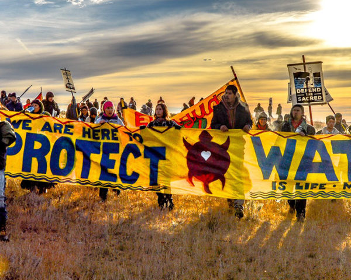

In 1851, a woman named Toypurina was remembered in California as a fighter. Twenty years earlier, she had organized a revolt against Mission San Gabriel, where Tongva people had been forced to live, labor, and give up their language and religion. She was caught, put on trial, and exiled. But she had stood in front of her captors and told them exactly why she had acted. Her name was not in any textbook for the next 150 years. This course is going to change that.
Before Contact: A World Already Full

When European explorers arrived in the Americas in the late 1400s, they did not find an empty land. They found hundreds of distinct nations, each with its own government, language, trade network, and way of life. Historians estimate that between 50 and 100 million people lived in the Americas before European contact. In what is now California alone, there were over 100 different tribes and approximately 300,000 people speaking more than 100 distinct languages.
These were not simple societies. The Haudenosaunee Confederacy, also called the Iroquois League, had a democratic constitution that influenced the thinking of some American founders. The Mississippian cultures of the Southeast built cities with tens of thousands of residents. The Pueblo peoples of the Southwest built multi-story stone apartment complexes that are still standing today. California nations like the Chumash built oceangoing canoes and traded across hundreds of miles of coastline.
Every nation had its own relationship with the land. For most Indigenous peoples, land was not something you could own the way Europeans owned property. It was something you belonged to: something you had responsibility for, lived with, and passed on. That idea would become one of the central points of conflict when European settlers arrived.
Understanding this world matters because it pushes back against a common mistake: the idea that Indigenous peoples were primitive or backward before Europeans arrived. The evidence says otherwise. What colonization destroyed was not a simple world. It was a complex, thriving one.
"We did not think of the great open plains, the beautiful rolling hills, and the winding streams with tangled growth as 'wild.' Only to the white man was nature a 'wilderness.'"
Luther Standing Bear (Lakota), Land of the Spotted Eagle, 1933.
Standing Bear grew up on the Great Plains before the reservation era and spent his life pushing back against the idea that Native peoples were uncivilized — he argued that it was the settlers who failed to understand the land they were entering.
Question 1: What is Standing Bear saying about the difference between how Native peoples and European settlers saw the land? Use a specific detail from your reading to support your answer.
Question 2: How does this quote connect to the essential question about sovereignty and survival?
What Colonization Actually Did

ColonizationWhen one group of people takes control of another people's land, government, and way of life, usually by force, and uses their resources for their own benefit. in California began in 1769 when Spanish missionaries built the first mission at San Diego. Over the next 54 years, Spain built 21 missions along the California coast. The mission system forced Native Californians to live and work inside mission walls, converting to Christianity, giving up their languages, and laboring for no pay. Those who tried to leave were hunted down and brought back.
The results were catastrophic. Before the missions, California had approximately 300,000 Indigenous people. By 1900, that number had fallen to around 15,000. Disease killed many. But so did starvation, forced labor, violence, and despair. Historians call this a genocide. The Native population of California dropped by 95 percent in roughly 130 years.
After the missions came U.S. statehood in 1850. The new California government passed a law called the Act for the Government and Protection of Indians. Despite its name, this law allowed white settlers to declare Native children "vagrant" and force them into years of unpaid labor. It created a legal system of slavery that lasted until 1863.
Alongside all of this was a legal framework that made land seizure seem legitimate. In 1823, the U.S. Supreme Court used a concept called the Doctrine of Discovery to rule that European nations had automatically gained the right to own land just by "discovering" it, even if people were already living there. This doctrine became the legal backbone of U.S. Indian law for the next two centuries. It was only formally repudiated by the Supreme Court in 2023.

The Indian Removal Act of 1830 forced tens of thousands of Native people from their homelands in the Southeast to territory west of the Mississippi River. The Cherokee called their forced march the "Trail Where They Cried." Historians know it as the Trail of Tears. Approximately 4,000 Cherokee people died on that journey. Thousands more from other nations died on similar forced marches.
What the missions, the Removal Act, and the Doctrine of Discovery had in common was this: they all treated Indigenous peoples as obstacles to be moved rather than as sovereign nations with rights. That assumption shaped U.S. policy for well over a century. The consequences are still felt today in every Native community in this country.
This is also a San Diego story. The Kumeyaay people, whose territory covered what is now San Diego County and northern Baja California, were among the first Native peoples in California to face Spanish missions. Mission San Diego de Alcalá was built on Kumeyaay land in 1769. The Kumeyaay burned it to the ground in 1775. That resistance was not a footnote. It was a declaration.
"Our nation was powerful. We were once a happy people. The white man seems to want to swallow us up; to make slaves of us."
Tecumseh (Shawnee), speech to Governor William Henry Harrison, Vincennes, Indiana, August 1810.
Tecumseh spent his life building a confederation of Native nations to resist U.S. expansion into their homelands; this speech was delivered directly to the man who would later become president and who had spent years pressuring Native nations to give up their land through treaties.
Question 1: Tecumseh used the word "slaves." Based on what you have read about the California mission system and the Indian Removal Act, do you think that word fits? Explain your thinking.
Question 2: Tecumseh was speaking directly to a U.S. government official. What was he demanding, and how does that connect to the idea of sovereigntyThe right of a nation or people to govern themselves and make their own decisions, without being controlled by another government.?
Resistance and Survival Across Centuries
Indigenous peoples never simply accepted what was done to them. At every stage of colonization and U.S. expansion, Native communities found ways to resist, adapt, organize, and survive. That is not a small thing. It is the central fact of Indigenous history in America.


Tecumseh organized one of the largest Native resistance movements in history in the early 1800s. He argued that no single nation could sell land that belonged to all Native peoples collectively, and he traveled thousands of miles building alliances from the Great Lakes to the Gulf of Mexico. He was killed in battle in 1813, but the confederacy he built showed what organized resistance could look like.
In the late 1800s, as reservation life destroyed traditional ways of living, the Ghost Dance movement spread across the Plains nations. It was a spiritual practice that prophesied the return of the old world and the departure of settlers. The U.S. government was so threatened by it that they sent soldiers to stop the dances. That decision led directly to the Wounded Knee Massacre of 1890, where the U.S. Army killed approximately 300 Lakota men, women, and children.
Resistance did not stop there. In 1968, the American Indian Movement, known as AIM, was founded in Minneapolis to fight police brutality against urban Native communities. In 1973, AIM members occupied Wounded Knee for 71 days to protest broken treatyA formal agreement between two governments; the U.S. signed over 400 treaties with Native nations, most of which the U.S. later broke. obligations and corrupt tribal leadership backed by the federal government. The occupation made international news and forced the U.S. to negotiate.
Through all of this, Native communities also preserved their languages, ceremonies, and cultures in hidden and quiet ways: passing down oral traditions in secret, maintaining relationships with the land, and keeping alive the knowledge that would eventually be reclaimed openly. Survival is also a form of resistance.

Federal Indian policy shifted dramatically over the decades, and almost every shift hurt Native communities in a different way. The timeline below shows the main phases:
-
1830sRemoval Era
The Indian Removal Act forced Native nations east of the Mississippi to relocate west, destroying communities, breaking treaties, and killing thousands on forced marches.
-
1887Allotment (Dawes Act)
The government broke up communally held reservation land into individual parcels. Native families kept some land, but "surplus" land was sold to white settlers. Native nations lost 90 million acres in 47 years.
-
1930s–50sBoarding Schools
The federal government removed Native children from their families and sent them to schools designed to erase their culture. The motto of these schools: "Kill the Indian, save the man."
-
1953Termination PolicyA U.S. government policy that ended the federal government's official relationship with over 100 Native nations, removing their legal status and forcing them to give up reservation lands.
Congress passed laws ending the federal government's relationship with over 100 Native nations. Tribes lost their legal status, their land, and their federal services. Many communities were devastated.
-
1975Self-Determination Era
The Indian Self-Determination and Education Assistance Act gave tribal governments more control over their own programs and services. It was the first major shift toward recognizing Native nations as self-governing. This is the era we are still in today.
Sovereignty: What It Means Right Now

Today, 574 federally recognized Native nations exist within the borders of the United States. Each one is a sovereign government. That means they have the right to make their own laws, run their own courts, operate their own schools, and manage their own land. Self-determinationThe right of a people to decide for themselves how to govern their community and shape their own future, without outside interference. is not a gift the U.S. gave to Native nations. It is a right that Native nations have always had, and that they have been reclaiming piece by piece for decades.
Tribal sovereignty shows up in ways many Americans interact with without realizing it. Tribal casinos exist because Native nations have the legal right to set their own gambling laws on their land, separate from state law. Water rights cases in the West often involve tribal claims that go back to treaties signed 150 years ago. Native nations can negotiate directly with the federal government over land use, natural resource management, and education. These are not special privileges. They are the surviving remnants of original political agreements.
At the same time, challenges are enormous. Native Americans experience the highest rates of poverty of any racial group in the United States. Life expectancy on many reservations is decades lower than the national average. Missing and Murdered Indigenous Women, known as MMIW, is a crisis that receives far less federal attention than it deserves. The Indian Health Service is chronically underfunded. Housing on many reservations is severely inadequate.
None of these problems are accidents. They are the long-term consequences of policies that took land, destroyed economies, removed children from families, and systematically cut Native communities off from their own futures. Understanding that connection is what this course is about.
🏠 Local Connection: The Kumeyaay Nation and San Diego
San Diego County is home to 18 federally recognized Kumeyaay bands, more tribal nations in one county than almost anywhere in the United States. The Kumeyaay have lived in this region for at least 10,000 years. Their territory was divided by the U.S.-Mexico border in 1848, splitting families and communities between two countries. Today the Kumeyaay operate their own governments, schools, and businesses on both sides of that border.
The Viejas Band of Kumeyaay Indians, the Sycuan Band, the Barona Group, and 15 other bands each operate independent tribal governments right here in San Diego County. Their presence is not a relic of the past. It is one of the largest concentrations of active tribal sovereignty in the United States.
How This Still Matters Today
Native nations are not a chapter from the past. They are governments, communities, and living cultures fighting for their rights right now.
The Standing Rock protests of 2016 put Native sovereignty on the front page of every newspaper in the country. Members of over 300 tribes gathered in North Dakota to oppose a pipeline that would run under a river that their reservation depended on for drinking water. The federal government eventually approved the pipeline anyway. The legal battle continues today.
In 2022, the Supreme Court heard a case called Haaland v. Brackeen that challenged the Indian Child Welfare Act, a 1978 law designed to keep Native children within Native communities after a century of forced removal. The court upheld the law, but the fact that it reached the Supreme Court at all shows how fragile these legal protections can be.
- Native American Tribal Sovereignty: Current Legal Battles and Rights
- Missing and Murdered Indigenous Women: The Crisis and the Response
- Kumeyaay Nation: Sovereignty and Land Rights in San Diego

Toypurina fought back in 1775. Tecumseh organized in 1810. AIM stood at Wounded Knee in 1973. Water protectors stood at Standing Rock in 2016. What does it mean that the same fight has been going on for 250 years? And what does it take to end it?